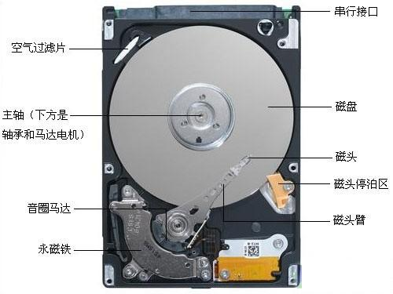
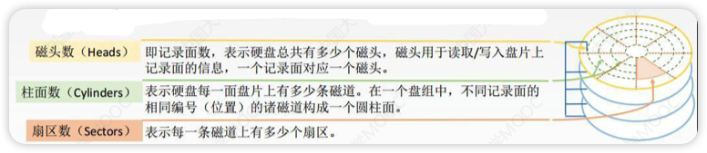
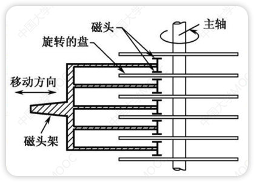
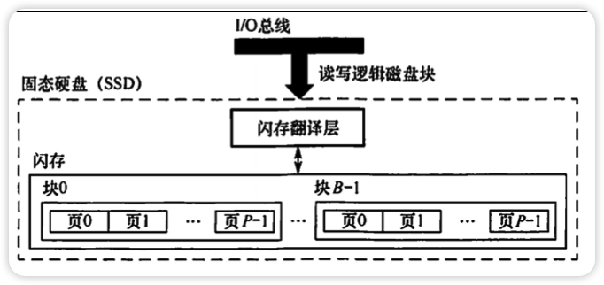

外存又称辅助存储器，主要使用磁表面存储器
优点
缺点



一块硬盘含有若干个记录面，每个记录面划分若干条磁道，每条磁道划分为若干个扇区(块)，块是磁盘的最小单位(磁盘按块存取)
硬盘存储器由磁盘驱动器、磁盘控制器和盘片组成
每个扇区的数据量相同(如1KB)
簇：一组扇区
性能指标
磁盘的容量：磁盘能存储的字节总数
记录密度：盘片戴维面积上记录的二进制的信息量
道密度：沿磁盘半径方向单位长度上的磁道数
位密度：磁道单位长度上能记录的二进制代码位数
面密度：位密度 * 道密度
磁盘所有磁道记录的信息量一定相等，最大圈的磁道与最小圈的磁道记录信息量相同
平均存取时间 = 寻道时间(磁头移动到目的磁道) + 旋转延迟时间(磁头定位到所在扇区) + 传输时间(传输数据所花费的时间)
数据传输率：磁盘存储器在单位时间内向主机传送数据到字节数
使用驱动器号(C盘还是D盘)、柱面号、盘面号、扇区号来定位任意一个磁盘块
工作方式：
机械式部件，读写是串行的，不能同时既读又写或者同时读(写)两组数据
磁盘阵列
是一种基于闪存技术的存储器
一个SSD由一个或多个闪存芯片(代替磁盘的机械驱动器)和闪存翻译层(代替磁盘控制器)组成
闪存翻译器可以将块地址修改
优点
缺点
容易磨损(所以当不了传家宝)

磨损的均衡技术